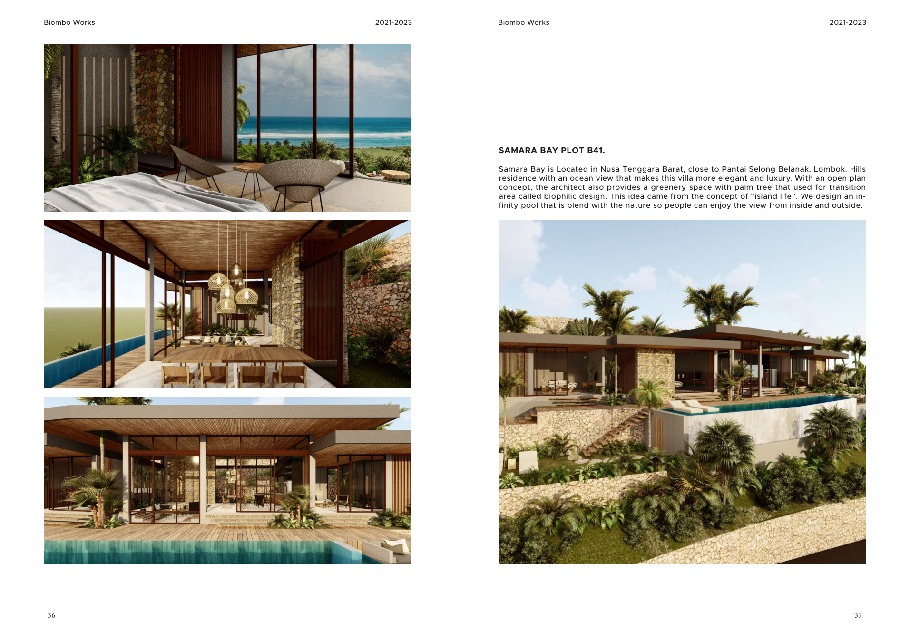
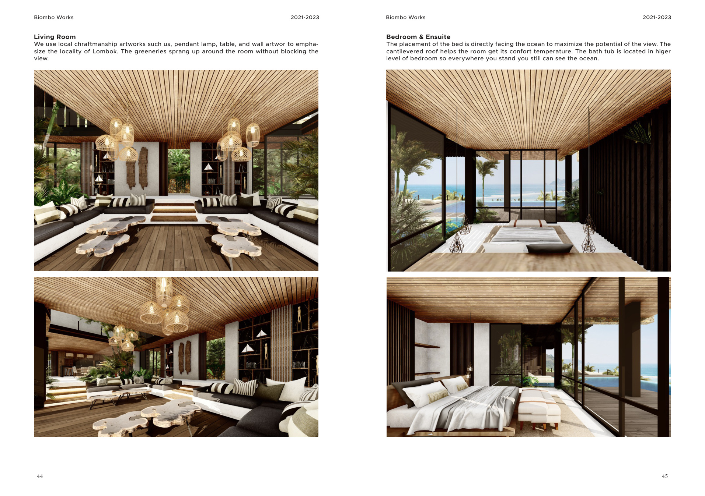
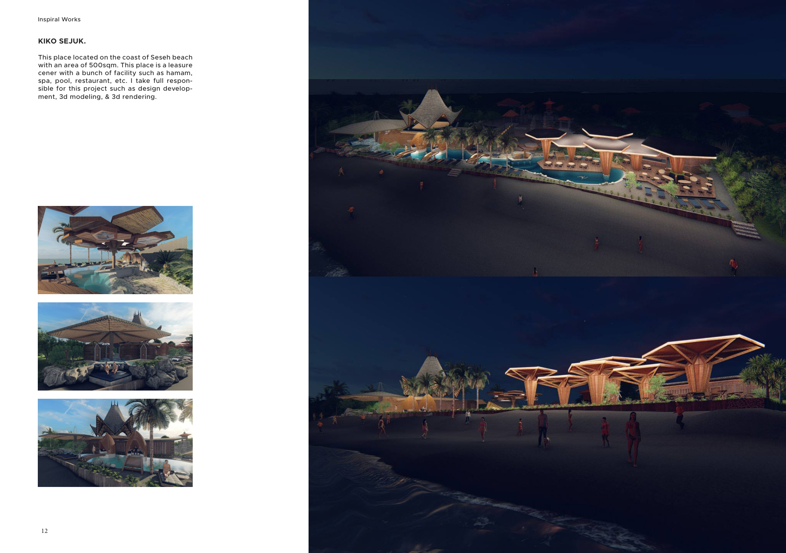
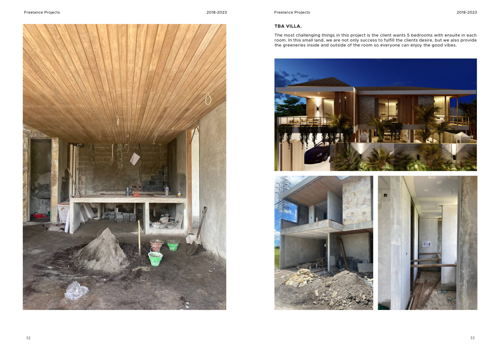
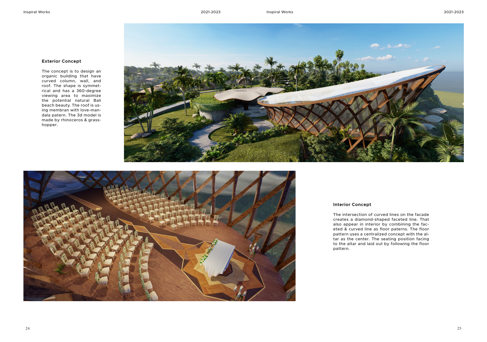
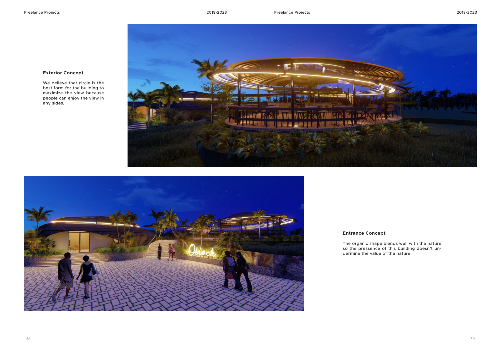
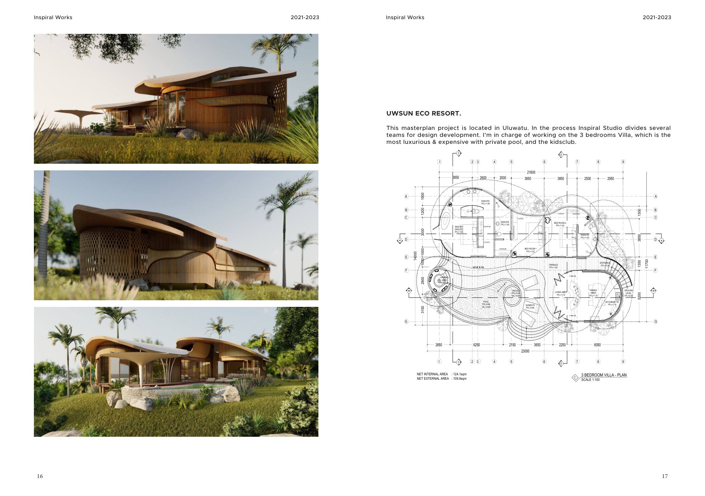
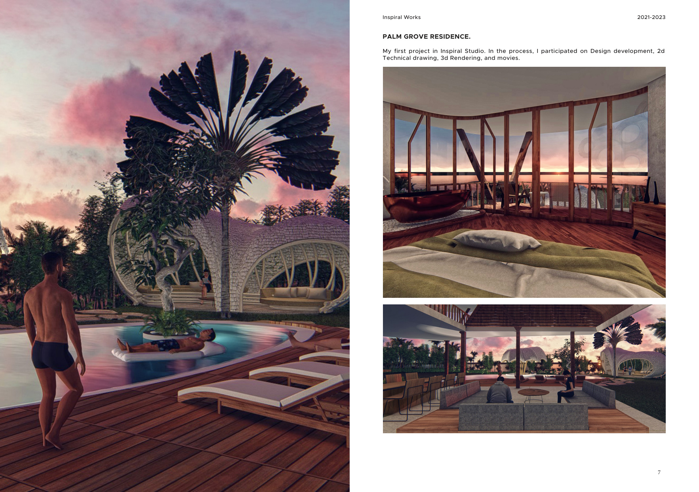

Dezier Studio
A curated architecture portfolio for design-led residences, villas, hospitality spaces, and tropical lifestyle environments shaped by local context, material craft, and everyday livability.
Dezier Studio by Laksana Matra creates quiet tropical architecture for homes, villas, and hospitality spaces, balancing atmosphere, material clarity, climate, and everyday livability.
Portfolio Foundation
The visual language comes from Laksana Matra's attached architectural portfolio: tropical residences, compact villas, coastal leisure spaces, resort planning, and organic forms shaped around view, climate, greenery, and craft.



Private Villa Concepts
Open-plan hill residence with ocean views, biophilic transitions, palm-lined outdoor living, and an infinity pool.

View-Led Residences
A hilltop villa arranged so each room has access to the view, with shade, craft details, and generous living areas.

Wellness-Oriented Spaces
A coastal leisure center concept including hamam, spa, pool, restaurant, and hospitality-driven guest flow.

Compact Villa Design
A small-land villa resolving five ensuite bedrooms while preserving greenery, privacy, and a welcoming holiday feel.

Tropical Residential Design
Organic curved columns, faceted interior lines, and 360-degree viewing logic for a memorable Bali coastal setting.

Tropical Residential Design
A circular organic concept in Tegalalang, shaped to maximize rice-field views while sitting gently in nature.

Wellness-Oriented Spaces
A Uluwatu masterplan project combining villa layouts, technical planning, resort amenities, and family-oriented facilities.
Design Process
The process begins with listening, then moves through site context, concept design, spatial development, and the atmosphere of the finished experience.
Clarify lifestyle goals, intended use, timing, location preferences, and comfort level.
Translate aspirations, daily routines, spatial needs, and site context into a focused design brief.
Shape concept design, spatial brief, architectural direction, guest experience, and positioning.
Refine layout, material language, climate response, and practical coordination details.
Consider how the architecture feels through arrival, rest, gathering, privacy, light, and landscape.

Why Bali
Contact
Share a little about what you are considering. This form is an initial conversation starter for architectural ideas, portfolio enquiries, and future project possibilities.
dezierarchitect@gmail.com @dezier.architect{kind=link}
{kind=link}
{kind=link}
{kind=link}
{kind=link}
{kind=link}
{kind=link}